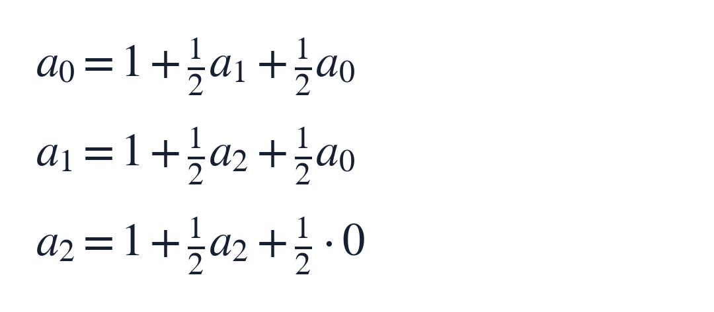
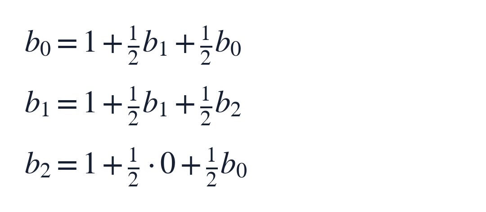
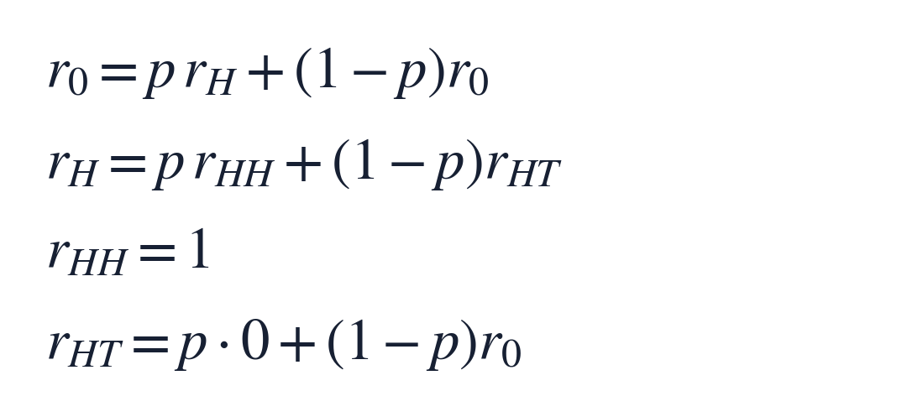
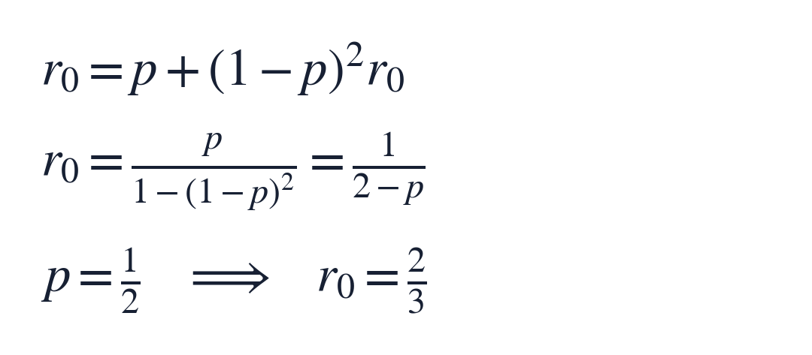

每周面试挑战 001｜连续抛硬币：HHT 与 HTH 的等待时间
概率与随机过程｜中等偏难｜建议先独立思考 25–35 分钟
这期只有一道主问题和一个追问。会用到条件概率、期望和简单的线性方程，不需要预先掌握马尔可夫链。
主问题：分别要等多久？
连续抛一枚公平硬币，每次结果相互独立。H 表示正面，T 表示反面。从没有任何抛掷记录开始，每抛一次就检查最新的三个结果。
分别研究两种停止规则：
- 规则 A：第一次出现连续的 HHT 时停止
- 规则 B：第一次出现连续的 HTH 时停止
两种规则下，平均各要抛多少次？请给出推导。
计数包含完成目标的最后一次抛掷。窗口可以重叠，检查位置是第 1–3 次、第 2–4 次、第 3–5 次……例如 HHHHT 在第 5 次完成 HHT。
唯一追问：放到同一条序列里竞赛
现在让两种模式共享同一条抛掷序列，从空记录开始，哪个先出现就立即停止。把硬币改成每次出 H 的概率为 p，出 T 的概率为 1−p；p 固定且严格介于 0 和 1，各次仍相互独立。
求 HHT 先于 HTH 出现的概率，写成 p 的函数，并给出公平硬币时的数值。
可以先只做公平情形，再把方程里的 1/2 换成 p 和 1−p。
三级提示：需要时再往下看
提示 1｜记住哪一小段历史就够了？
只保留历史末尾中，仍有机会接成目标模式的那一段。比如等 HHT 时，已经看到 HHH，接下来出现 T 就能完成目标；此时有用的尾巴仍是 HH。
提示 2｜把状态列出来
等 HHT 时，用“空、H、HH”三个未完成状态；等 HTH 时，用“空、H、HT”。
竞赛时合并为“空、H、HH、HT”，再加上两个终点。每次抛掷后，保留既是当前历史后缀、又是某个目标前缀的最长字符串。
提示 3｜分别写哪一种递推？
求剩余等待时间：先付出这一次抛掷，再加上新状态的期望剩余时间。
求最终获胜概率：按下一次 H 或 T，把后继状态的获胜概率加权。想一想：竞赛中一旦进入 HH，继续出现几个 H 后再出现 T，谁会先完成？
完整解答从这里开始
如果想独立完成，先停在这里；下面会给出所有答案。
1 用“有用的尾巴”压缩历史
未来抛掷与过去独立，过去留下的作用只有一件事：已经为某个目标接好了多少前缀。较短的可用尾巴也包含在最长尾巴中，因此保留最长的一个就足够预测后续状态。
例如只等 HHT，历史 TTHHH 和 HHH 虽然长度不同，但有用的尾巴都是 HH；从此刻起，两者的剩余等待时间分布相同。这就是本题的状态压缩。
先确认期望是有限的：只检查今后互不重叠的三次一组，每组恰好等于指定模式的概率都是 1/8，组与组独立。平均等 8 组、也就是 24 次，就会在组末看到目标。原题还检查组间的重叠窗口，只会更早停止，因此其平均等待时间至多 24 次。下面可以放心用有限期望列方程。
2 主问题 A：等 HHT
用 a₀、a₁、a₂ 分别表示状态“空、H、HH”下，从现在开始还需要抛多少次的期望。下标是已经匹配的前缀长度；完成目标后的剩余时间为 0。
- 空：下一次 H 进入 H；下一次 T 仍是空
- H：下一次 H 进入 HH；下一次 T 得到 HT，没有可用前缀，回到空
- HH：下一次 T 完成目标；下一次 H 得到 HHH，末尾仍有 HH，留在 HH
于是每个状态都满足“本次花 1 步，再对后继状态取平均”：


从最后一行先解出 a₂ 为 2。第一行给出 a₀ 比 a₁ 多 2；把 a₂ 代入第二行，再回代，得到 a₁ 为 6，a₀ 为 8。
所以，HHT 的平均等待时间是 8 次。
3 主问题 B：等 HTH
这次用 b₀、b₁、b₂ 表示“空、H、HT”下的期望剩余次数。
- 空：H 进入 H，T 留在空
- H：T 进入 HT；H 得到 HH，末尾仍有 H，留在 H
- HT：H 完成目标；T 得到 HTT，没有可用前缀，回到空
同样按下一步分类：


第一行给出 b₀ 比 b₁ 多 2；第二行给出 b₁ 比 b₂ 多 2。代入第三行，得到 b₀ 为 10、b₁ 为 8、b₂ 为 6。
所以，HTH 的平均等待时间是 10 次。
两组方程清楚展示了等待时间来自哪里：每种模式都有自己的“积累进度、保留进度、重新开始”的路线。把这些路线逐条算进去，就能得到答案。
4 追问：偏置硬币下，谁先出现？
现在记 r₀、r_H、r_HH、r_HT 为四个未结束状态下，最终由 HHT 获胜的概率。HHT 终点的值为 1，HTH 终点的值为 0。每个独立三连块出现 HHT 的概率都严格为正，因此沿用前面的分组论证，竞赛几乎必然结束。
最有用的观察是：一旦已经到 HH，HHT 就必胜。 后续每个 H 都保留 HH；第一次 T 到来时，HHT 完成。在此之前没有 T，也就无法先完成 HTH。因为 p 小于 1，这个 T 几乎必然会来。
另外，从 HT 出发，下一次 H 让 HTH 获胜，贡献 0；下一次 T 则回到空状态。


第一行与 p 大于 0 给出 r₀ 等于 r_H。把后两行代入第二行，就只剩一个未知数：


公平硬币时，HHT 先出现的概率为 2/3，HTH 为 1/3。
这组递推还提供了一个直观解释：等到第一个 H 后，若下一次又是 H，就进入必胜状态；若接着出现 TT，就把状态清空，重来一轮；若接着出现 TH，HTH 已完成。对应的三条分支概率分别是 p、(1−p)² 和 p(1−p)，加起来正好为 1。
随着 p 增大，走进 HH 的机会增加，HHT 的胜率也随之增加。例如 p 为 1/4、1/2、3/4 时，胜率依次为 4/7、2/3、4/5。
5 精确核验：枚举路径，再合并状态
先做一个能手查的小检查。公平竞赛中，恰好第 3 次结束的路径分别是 HHT 和 HTH；恰好第 4 次由 HHT 获胜的路径是 HHHT、THHT，由 HTH 获胜的路径只有 THTH。
因此，截至第 4 次，HHT 已获胜的概率为 4/16，HTH 为 3/16，尚未结束为 9/16。三者之和为 1。这里把第 3 次已经结束的路径也计入了累计概率。
我另外用精确分数枚举了全部 4096 条长度为 12 的序列，并与状态递推逐项核对；公平硬币以及 p 为 1/4、3/4 时均一致。继续用精确分数合并状态、推进至 200 次，两个单目标的截断期望分别约为 8.000000 和 10.000000；未计入的期望余项都小于十亿分之一。核验代码没有使用随机模拟，证明由前面的状态方程给出。
6 这题真正可以带走的方法
先确定状态，再确定状态上要计算的量。
- 要问“还要多久”，每步累加 1，目标终点的值设为 0
- 要问“哪一方先到”，对后继胜率取平均，两个终点的值分别设为 1 和 0
这就是有限状态随机过程里的“首次到达时间”和“吸收概率”。同一种建模方法也能分析随机字符流中某个标记的首次出现：把目标换成更长的字符串，仍然维护“最长可用后缀”。
面试中值得讲清的关键步骤，是解释状态为什么足够、写对每个转移，再解小型线性方程组。
一小段边界
以上依赖抛掷相互独立、p 固定、从空记录开始，并且检查所有重叠窗口。p 为 0 或 1 时，两种目标都不会出现，竞赛没有赢家，不能把极限胜率当成端点的实际胜率。两模式在一个固定三连窗口内概率相同，但相邻窗口共享抛掷结果；首达时间与竞赛胜率要按各自的状态过程计算。
题型出处与延伸阅读
这是经典的模式等待与 Penney 竞赛题型。题干及上述状态推导为本期重新组织，参考如下公开数学资料。
- Ben Lynn：Penney’s Game（Stanford 个人学术页面）：直接讨论 HTH 与 HHT 的竞赛，并给出字符串重叠和生成函数的进一步解法
- Aldous 与 Fill：Reversible Markov Chains，§2.2 的 Example 2.16（UC Berkeley）：从马尔可夫链出发，说明模式重叠怎样进入首次出现时间的计算